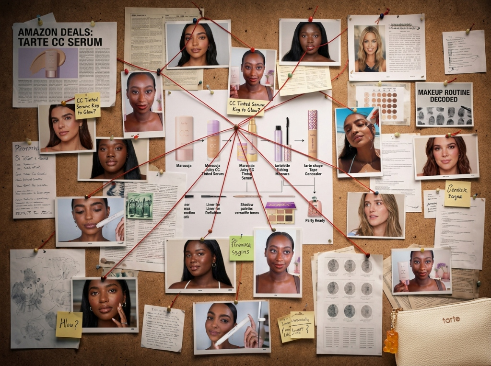
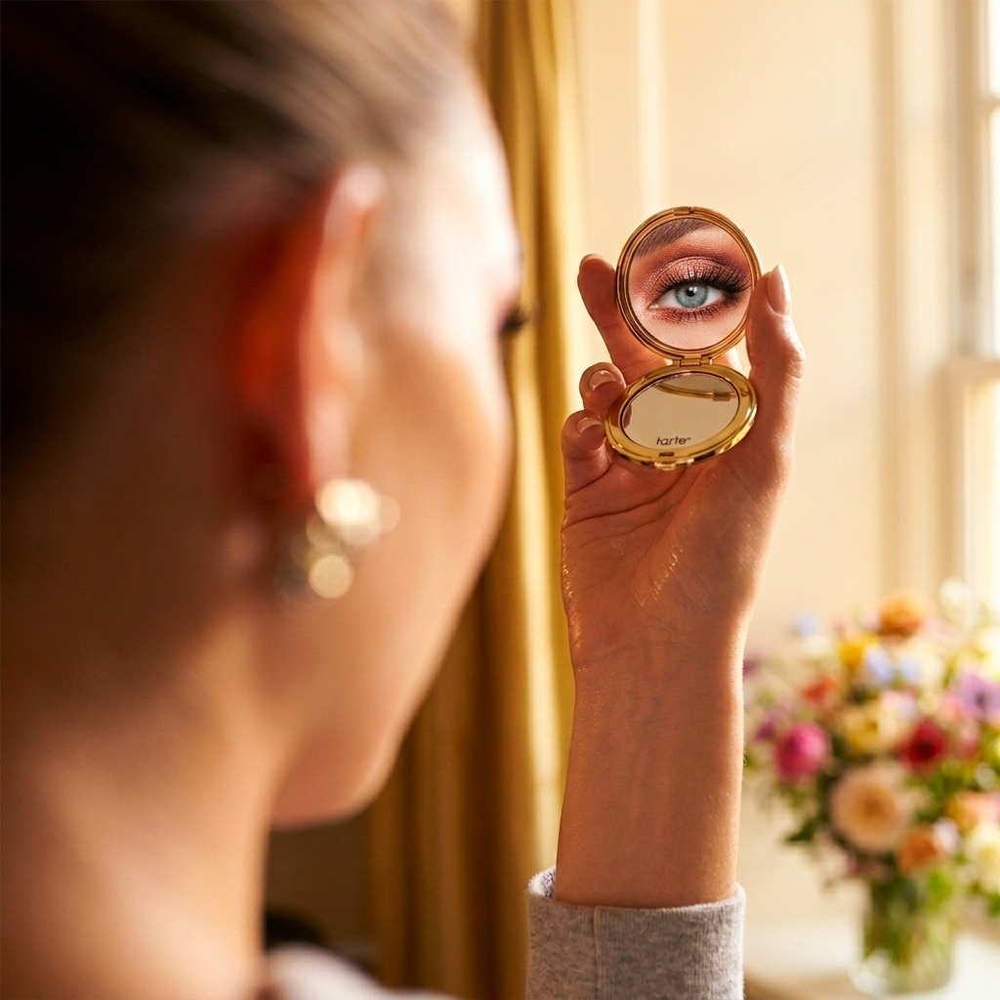
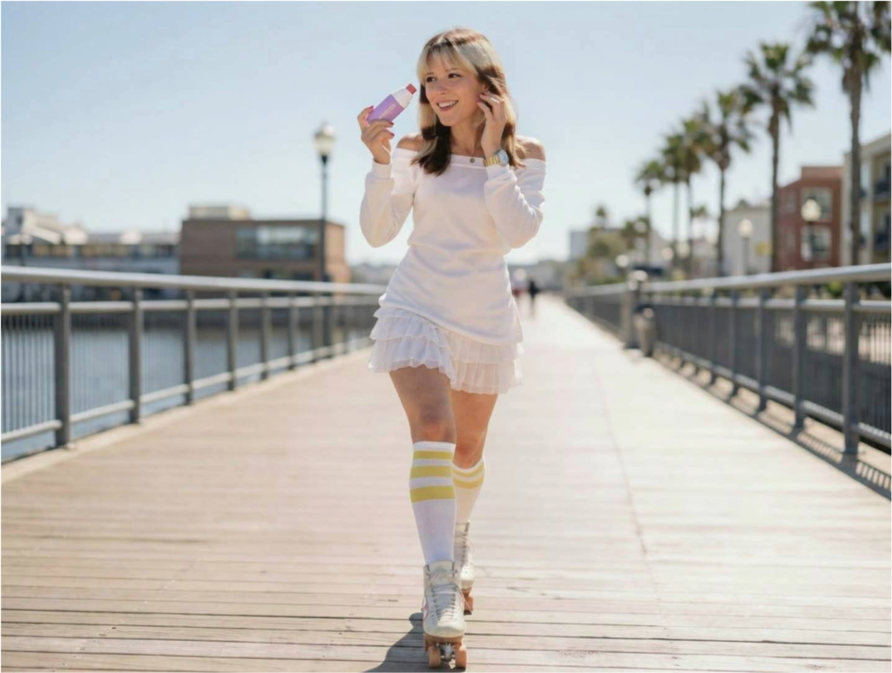
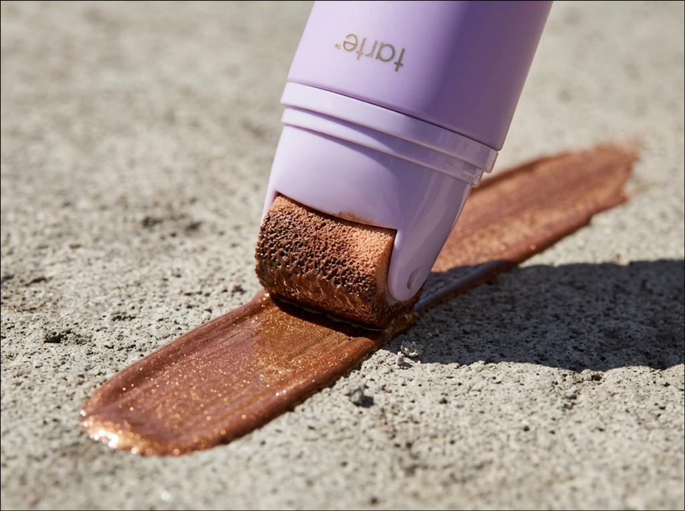
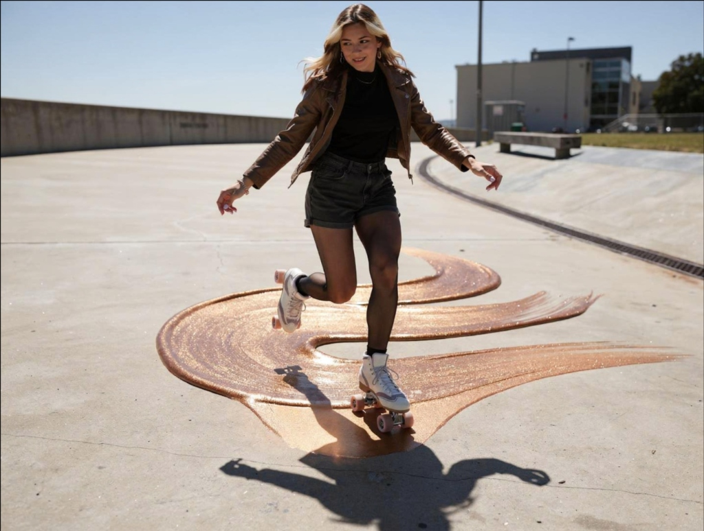

Everyone has their favorite podcast, whether you’re more of a Call Her Daddy person or Rotten Mango. This October we’ve got the hottest new podcast for all our curious little Tartelettes. The only podcast that gets into the nitty gritty deets about some of the hottest beats on Insta!
Every week of October we will get deep into the looks the girlies are rocking, and figure out just who done it? (Tarte ofc!)
Listen to TeaserA deep dive into how a flawless matte look survived a 12-hour festival.
Investigating the suspects behind the viral glass-skin cheekbones on the red carpet.
Our lead beauty investigators uncover the truth behind bad blending.


2019 may have been 6 years ago, but the meme is somehow still strong. Tarte cosmetics is staring camp right in the eye, except we’re actually bringing c*nt to the red carpet. To promote products during the Met Gala, Tarte Cosmetics could post a photo of them looking the cream cheek palette in the eye on their story. And then during the Met Gala, release looks using Tarte products that scream CAMP.
Build upon the story and create an opportunity to advertise other products. Make the Met Gala Tarte’s vers.
Cream cheek palettes, maybe eyeshadow palettes, one model necessary.
After photo shoot, simple shot of the entire look.
Zooming in on the reflection in the mirror which transitions to a zoom out on the entire face. Followed by b-roll of the look.
Instead of a standard GRWM, we send a creator to act as a "Pretend Red Carpet Beauty Interviewer." They aggressively (but playfully) interrogate influencers about what's holding their makeup together through the sweat, flashes, and afterparties.
An exclusive pop-up bathroom/lounge near the hottest afterparties, stocked entirely with Maracuja Juicy Glow and Shape Tape. We capture raw, unfiltered footage of celebrities touching up their faces at 2 AM.



Need a primer that will roll with the punches? Try maracuja juicy glow primer! Swipe some on and stay on a roll. Tarte showcases how to apply the glow primer by collaborating with roller skating influencers to prime the streets. By having the skaters roll glow primer on the concrete, Tarte can highlight just how bright the glow primer is. Not only does it make it big, it showcases the revolutionary new rolling applicator that this product comes with!
Highlight the rolling applicator. By having a roller skating influencer roll on the paint, it showcases smooth spread.
Roller skates, Glitter-y paint that looks similar to maracuja juicy glow primer.
Influencer outreach then video shoot.
The influencer skates through paint. Aerial shot showcases them covering an area. Zoom transition out to a face with primer smoothly applied.
Alongside Alyssa Liu, we partner with diverse, high-energy skater influencers across multiple demographics to ensure the campaign hits every corner of the skating subculture.
A user-generated content challenge encouraging fans to show off their glowing looks while moving, skating, or dancing. The most creative entries get featured on the main Tarte feed.
Tarte is for those who roll with the punches. The Prime the Streets campaign is built to prove that the Maracuja Juicy Glow Primer doesn't just sit pretty—it moves, sweats, and endures. We chose the skating subculture because it perfectly embodies this resilient, high-energy lifestyle. Whether you're hitting the halfpipe or jamming at a roller rink, Tarte stays flawless so you can keep rolling.
Her incredible fluidity and bright, positive energy perfectly match the Maracuja Juicy Glow aesthetic. She brings a massive, engaged Gen-Z audience.
Brings an edgy, streetwear vibe to the campaign, proving that the glow primer holds up through intense, gritty skatepark sessions.
A viral roller skating sensation whose smooth, rhythmic videos capture the perfectly carefree, glowing lifestyle of Maracuja.
I love makeup and I love social media. If you are looking for someone who is ready to get their hands on every part of brainstorming, production, editing and posting; I am definitely your gal! I love thinking of new and fun ways to make content that reaches a large audience. The most important thing to me when looking for a job is liking what you do, and loving what you sell.
I already love Tarte, so let me help you sell!